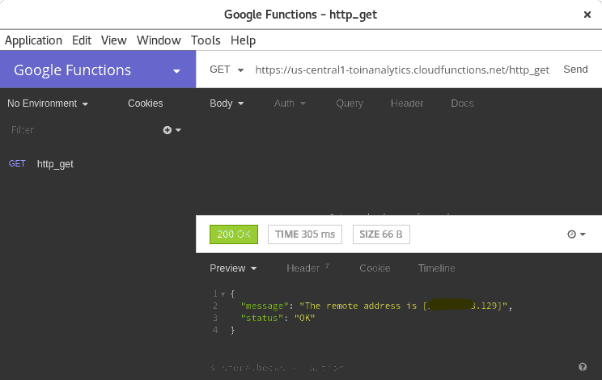
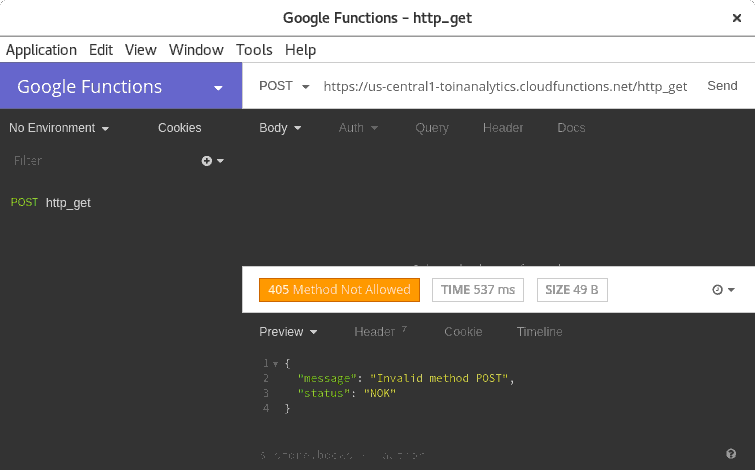

Usando Python no Google Cloud Functions, rumo ao serverless
Um breve teste de conceito para ver "qualé" do Google Cloud Functions e dessa ideia de serverless
Motivação
A ideia de serverless é muito tentadora, praticamente um estágio superior do devops (há quem fale em noops). Conectar endpoints a funções especializadas, e não se preocupar mais com regras de escalabilidade, regras para que servidores subam e sejam mortos sob demanda.
Mas não é simples, dá trabalho, exige outra visão, outra organização, outra forma de desenvolver.
Mas essa nova forma de desenvolver, é algo necessário: em tempos da ressaca do padrão MVC, em que, na prática, todas as regras de negócio acabam sendo sequestradas por algum framework, acredito que agora é o tempo de libertarmos nossas regras, trazê-las para a segurança de módulos e pacotes e classes que não queiram e nem precisem saber se as entidades são servidas por uma API, REST ou não, ou por um sistema que renderiza templates html no servidor e os devolve prontos, deixando para o javascript algumas questões de embelezamento apenas, ou se é uma modernosa SPA.
Tendo esse isolamento, a maior parte do problema seria com o acesso e armazenamento, as regras poderiam ficar isoladas desses nada simples mas possessivos detalhes.
E com um outro aspecto muito interessante. O preço. Pesquise, os pacotes para o primeiro milhão de requisições por mês em geral ficam na casa dos centavos de dólar. Para o milhão de requisições!
Imagino uma aplicação React, por exemplo, hospedada em um serviço de arquivos estáticos, que acesse uma API baseada em funções, sendo uma boa pedida para a maioria dos sistemas WEB.
Migrar?
Uma forma de começar é usando para pequenas tarefas que devem ser feitas em background, como filas. Recentemente a Amazon anunciou a integração de seus serviços de funções AWS Lambda com o serviço de filas SQS.
Enfim, não é algo para o qual devemos jogar todos nossos esforços de imediato para coisas existentes, e mesmo sistemas novos, podem ser mais práticos usando as velhas ferramentas.
Mas é legal pra caramba!
É, sem dúvida, um negócio muito legal. Então, vamos estudar, meter a mão na massa, para que possamos entender e vislumbrar seus melhores usos.
Digamos que eu queira criar um único Endpoint. É só escrever a função e publicar. Muito mais fácil que subir um serviço, seja por docker, por máquina virtual, por máquina física. Mesmo serviços como Heroku demandam uma configuração e um serviço rodando sempre. Com funções, você as deixa lá no provedor de serviço, e ela é executada quando necessário.
Chega de hype
Mãos à obra! Quero saber como responder a uma requisição HTTP.
Tenha sua conta criada no Google Cloud. Ele exige cartão de crédito, mas a checagem é com valor zero, muito legal. E vem com US$ 300,00 pra você usar, como faz a Amazon AWS.
Após isso, você será guiado a mais algumas configurações e para associar o serviço de funções à sua conta para faturamento. Ele lhe guiará para a instalação, em sua máquina, de ferramentas para linha de comando.
Tudo pode ser feito via console, mas preferi a linha de comando para ir me habituando a futuras explorações com CI/CD.
Com a ferramenta instalada e configurada, estamos a dois passo do paraíso, e pode acreditar, a documentação é muito boa e conduz seu leitor pelas mãos, para os lugares certos, sem confusão.
E o código?
Minha primeira surpresa, suas funções estão no contexto de uma aplicação Flask. Isso mesmo, você vai receber um objeto request do Flask. Ah, pra quem não se tocou ainda, estou usando Python. A alternativa é Node JS.
O modo mais fácil de ter algo funcionando é criando um arquivo main.py para sua função:
from flask import (
jsonify,
make_response,
)
from flask_api import status as http_status
def response_json(message, status='OK', code=http_status.HTTP_200_OK):
response = {
'status': status,
'message': message,
}
return make_response(jsonify(response), code)
def http_get(request):
if request.method != 'GET':
return response_json(
message=f'Invalid method {request.method}',
status='NOK',
code=http_status.HTTP_405_METHOD_NOT_ALLOWED,
)
try:
remote_addr = request.remote_addr
except AttributeError:
return response_json(
message='Inexistent remote address',
status='NOK',
code=http_status.HTTP_400_BAD_REQUEST,
)
return response_json(f'The remote address is [{remote_addr}]')
Deve-se escolher um nome para a função, que ficará registrada no serviço, e que deverá ser o nome da sua função (é possível, por parâmetros ter um comportamento diferente, mas aqui vai-se pelo mais fácil).
Nesse exemplo, nossa função é http_get. Esse é nosso ponto de entrada, essa função é que será chamada com o objeto request.
O que fazemos é simples. Se a requisição for um GET, retornamos o endereço do usuário, em um JSON.
Outro método retornará erro, e se, num caso absurdo, não tivermos esse endereço, não perdemos o rebolado e retornamos outro tipo de erro.
Aqui um exemplo de requisição bem sucedida (um GET):

E aqui um exemplo de requisição mal sucedida (um POST):

Deployando
Só vai funcionar se deployarmos!
Muito simples, em linha de comando:
➤ gcloud beta functions deploy http_get --runtime python37 --trigger-http --memory=128MB
Resultando em uma saída assim:
Deploying function (may take a while - up to 2 minutes)...done.
availableMemoryMb: 128
entryPoint: http_get
httpsTrigger:
url: https://us-central1-XXXXXXXXXXXXXX.cloudfunctions.net/http_get
labels:
deployment-tool: cli-gcloud
name: projects/XXXXXXXXXXXXXX/locations/us-central1/functions/http_get
runtime: python37
serviceAccountEmail: XXXXXXXXXXXXXX@appspot.gserviceaccount.com
sourceUploadUrl: https://storage.googleapis.com/gcf-upload-us-(...)&E_MUITOS_PARAMETROS_AQUI
status: ACTIVE
timeout: 60s
updateTime: '2018-08-26T15:49:36Z'
versionId: '6'
E basta acessar o endereço indicado nessa saída (httpsTrigger)
Os parâmetros são:
beta: indica que estamos usando uma feature beta (o Python versão 3.7).functions: o serviço a ser usado.deploy: o comando, nesse caso de publicação.http_get: o nome da função (que deve ser o mesmo dentro do arquivo)--runtime python37: qual interpretador usar.--trigger-http: o tipo da função, nesse caso uma que responda a requisições HTTP.-
--memory=128MB: a memória alocada para o ambiente; o padrão é 256MB.
Aí está. Agora que vimos funcionar, é bolar algo que use banco de dados e seja útil. Já está na minha cabeça, quando estiver usável eu publico e explico.